What this module does
This module adds a Spa screen on top of the normal Odoo Point of Sale till. The person at the till gets one new button. Pressing it shows a grid of every room, chair and station and whether it is available, reserved or in use right now, and a list of everything booked for today. From the same screen the till can book a treatment for later, start a walk-in on the spot, see who is currently being served, and open any booking to check it in, bill it or cancel it. Everything else about the till, the product screen, payment and receipts, is the Odoo Point of Sale you already know.
Before you start
You need Odoo 19, Community or Enterprise, with Point of Sale installed. Nothing else is required. Install this module from Apps; it adds a Spa app to the main menu and one button to the till.
Install with demo data on and you get a working example spa (Serenity Day Spa) with fourteen treatments, five therapists, eight rooms and stations, a real customer list and a week of bookings already there, exactly what every screenshot in this guide shows. A production database normally installs without demo data, so your own Spa app opens empty and you fill it in using the steps below.
Setting up your treatments
Open Spa > Services and press New. Fill in:
- Service Name: what the customer books, for example "Deep Tissue Massage".
- POS Category: groups treatments together; optional.
- POS Product: leave empty unless this one treatment should post to its own product. Left empty, the till falls back to the product set in step 5.
- Duration (hrs): how long the treatment takes, in hours. Half an hour is 0.5.
- Price: the price charged.
- Advance Payment Type: No Advance Payment, a Fixed Amount, or a Percentage of Price. Picking fixed or percentage opens a second field for the amount.
- Enable Time Slots: turn on if the treatment can only be booked at fixed times of day. A Time Slots tab appears where you add each slot's start and end time.
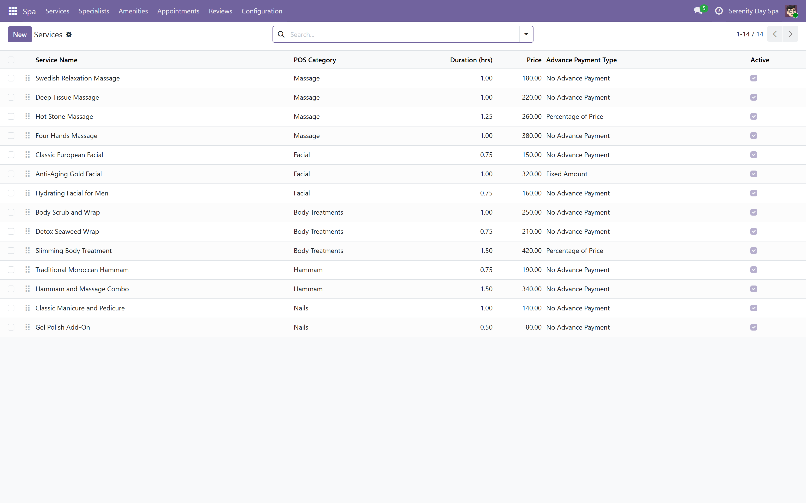
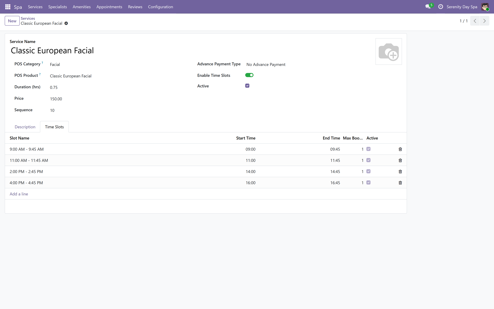
Setting up your therapists
Open Spa > Specialists, press New and fill in the name, phone and email. Enable Commission and a Commission Plan are optional; turn Enable Commission on and pick a plan (step 17) if this therapist earns a cut of what they sell. Avg Rating and Total Reviews fill themselves in as customers leave reviews; you never type them.
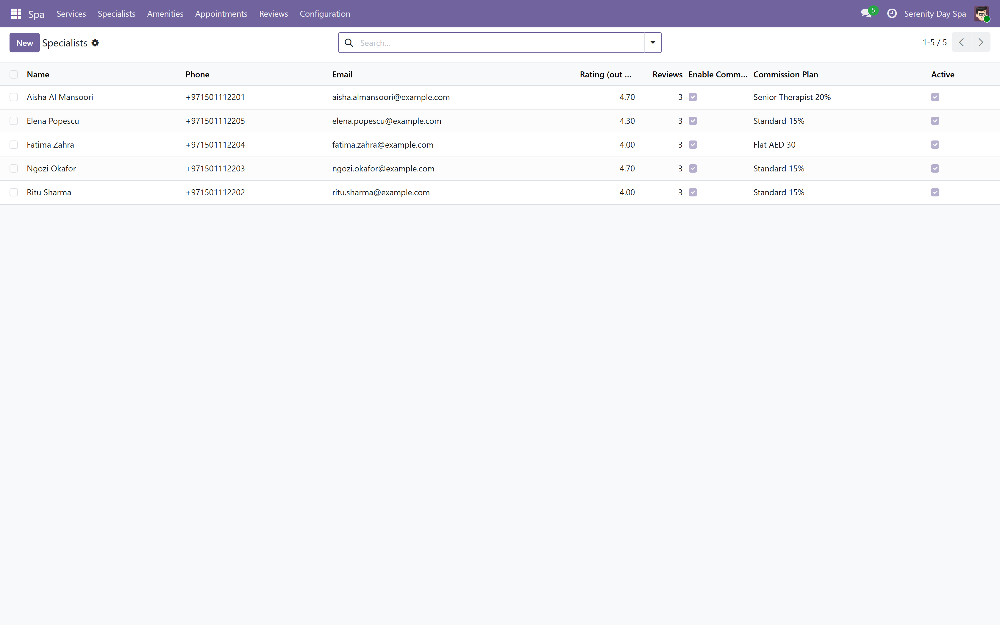
Setting up your rooms and stations
Open Spa > Amenities. A room, chair, couples suite, hammam room or nail station are all the same kind of record here, called an amenity. Press New, give it a name, a Type (Chair, Room, Station or Other) and a Capacity. Status is read only: it shows Available, Reserved or In Service, and changes itself as bookings move through the day.
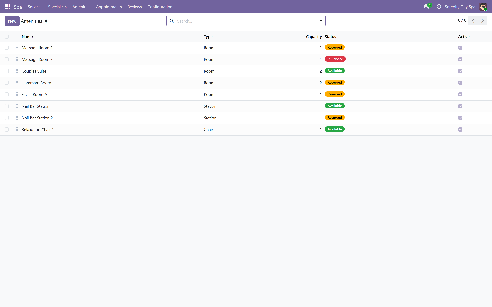
Turning on the Spa screen for a till
Every till (a "config" in Odoo) needs Spa Management turned on before the Spa button appears on it. Open Point of Sale > Configuration > Point of Sale, open your till, and find the Spa Management section.
- Enable Spa Management: turns the Spa button on for this till.
- Appointments to Display: how many upcoming bookings the till shows at once.
- Default Spa Service Product: the product used on the order line when a treatment has no product of its own. Set this even if every treatment has one, as a safety net.
- Show Specialists / Show Amenities: turn either off if this till should not offer a therapist or room choice, for example a mobile till with no fixed rooms.
- Reviews Mandatory: if on, staff must leave a review before a booking can be marked done.

Opening the till
Open Point of Sale, find your till's card and press New Session. The Spa screen adds nothing to opening a till.
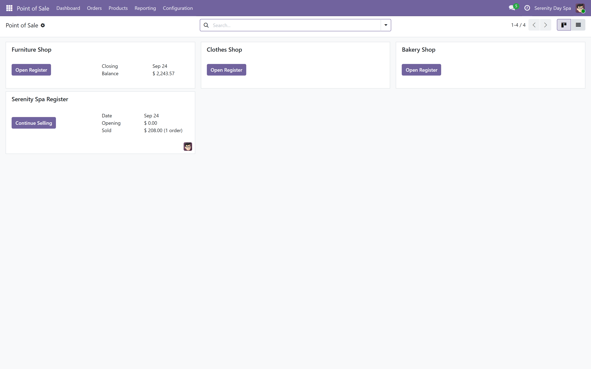
Once the till is open, look for the Spa button in the top bar and press it. This opens the Spa screen as an overlay on top of the normal product screen; nothing underneath it changes.
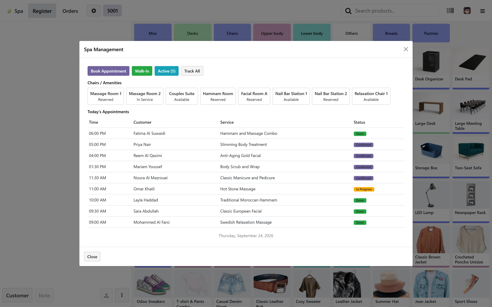
Booking a treatment for later
- Service: pick the treatment. If it has time slots, pick one.
- Customer: search by name or phone, or press + New to add someone with just a name.
- Specialist: pick a therapist, or leave Any Available selected. Then pick a room, or leave Any selected. Both optional.
- Summary: everything picked, the total price, and, if the treatment takes an advance payment, how much is due now and how much remains. Press Confirm Booking.
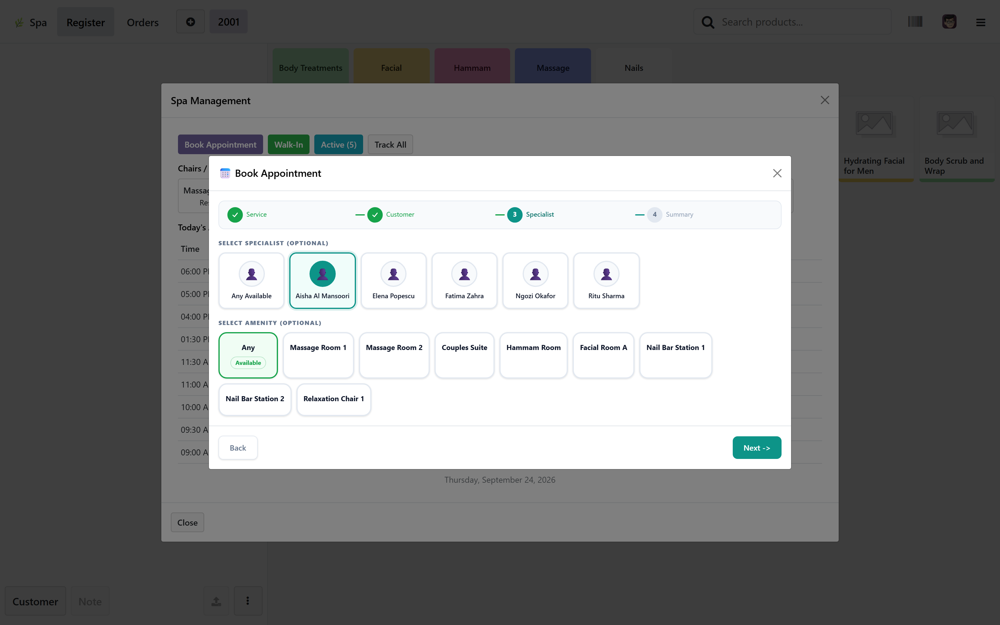
If the treatment carries an advance payment, confirming the booking adds that amount to the current order so it can be paid immediately.
Booking a room or a therapist already booked at an overlapping time is refused, with a message naming the conflicting booking, so two customers can never land in the same room by accident.
A customer walks in without a booking
From the Spa screen, press Walk-In. Tick one or more treatments, pick the customer, optionally pick a therapist and a room, and press Start Service. This creates the booking already in progress and puts every treatment ticked on the current order at once, with the customer already attached, ready for payment.
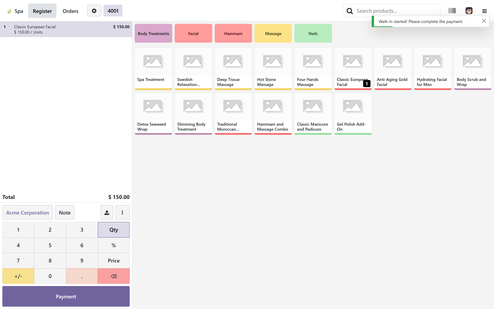
Checking a customer in and starting the treatment
A booking made ahead of time sits as Confirmed until the customer arrives. Press Active to see every confirmed or in-progress booking at once, with Start and Done on each. Press Start when the customer is taken through to the room; the room on the grid turns from yellow (reserved) to red (in service) immediately.
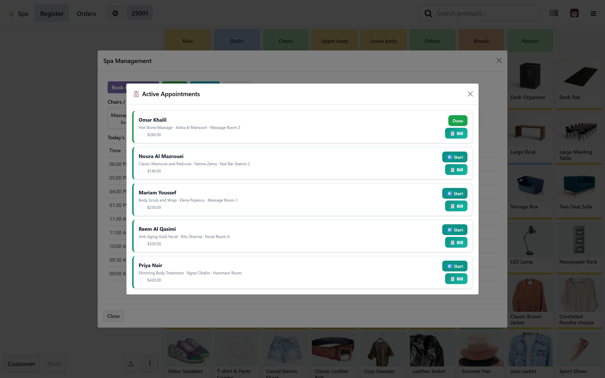
You can do the same from the room grid: click an occupied or reserved room to open its current booking and press Start Service, Complete, Add to Order or Cancel directly.
Taking payment
However the treatment reached the order, whether through a booking, a walk-in, or Add to Order from an active booking, it is now an ordinary line on the Point of Sale order. Press Payment the same way you would for any sale, pick the payment method, and validate.
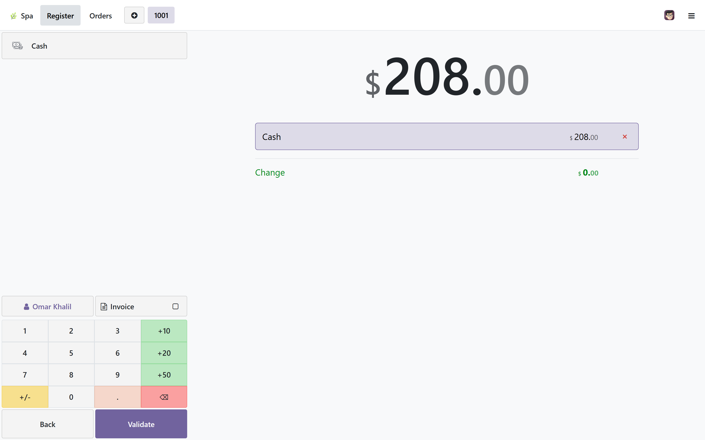
The receipt
When the sale is tied to a booking, the receipt prints the booking reference, the therapist and the room underneath the payment lines, so the customer leaves with more than a product name and a price. A sale with no linked booking, for example plain retail, prints exactly the normal Odoo receipt.

Selling with money down
If a treatment is set up with an advance payment (step 2), booking it adds that amount to the current order automatically, so it can be taken as a deposit right away. The appointment keeps track of how much has been taken and how much is still owed.
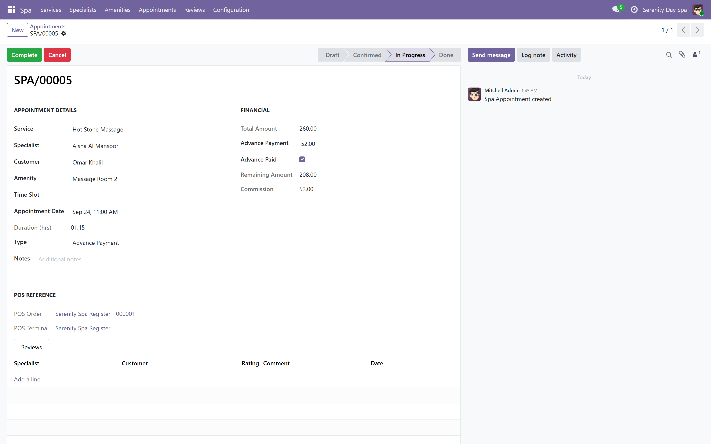
Seeing everything booked today
Press Track All. Filter by All, Confirmed, In Progress, Done or Cancelled. This is the fastest way to answer "what is happening today" without leaving the till.
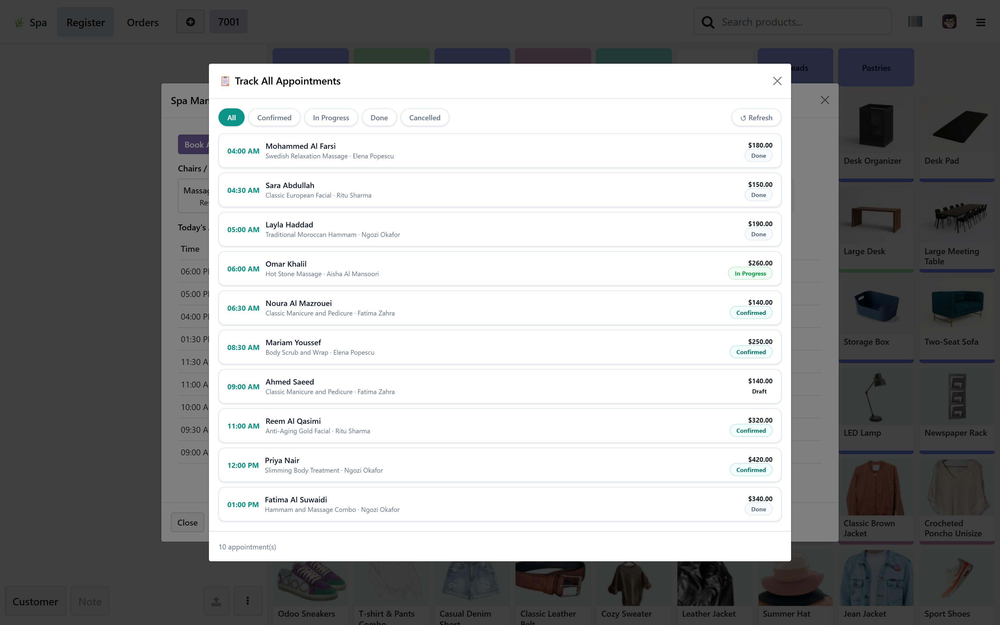
From the backend, Spa > Appointments, switching to the calendar view shows the whole week at a glance instead of just today, useful for a manager planning ahead rather than running the floor right now.
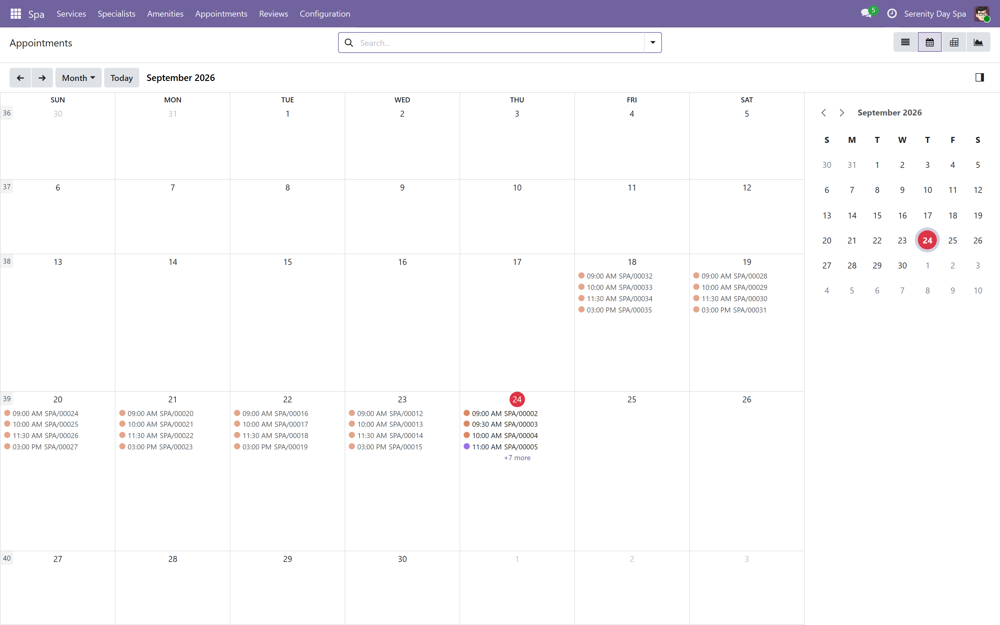
Cancelling a booking
Click the room on the grid, or find the booking in Track All or Active, and open it. If it is confirmed or in progress, press Cancel. The room is freed immediately; nothing is deleted, the booking is simply marked Cancelled and stays in the records.
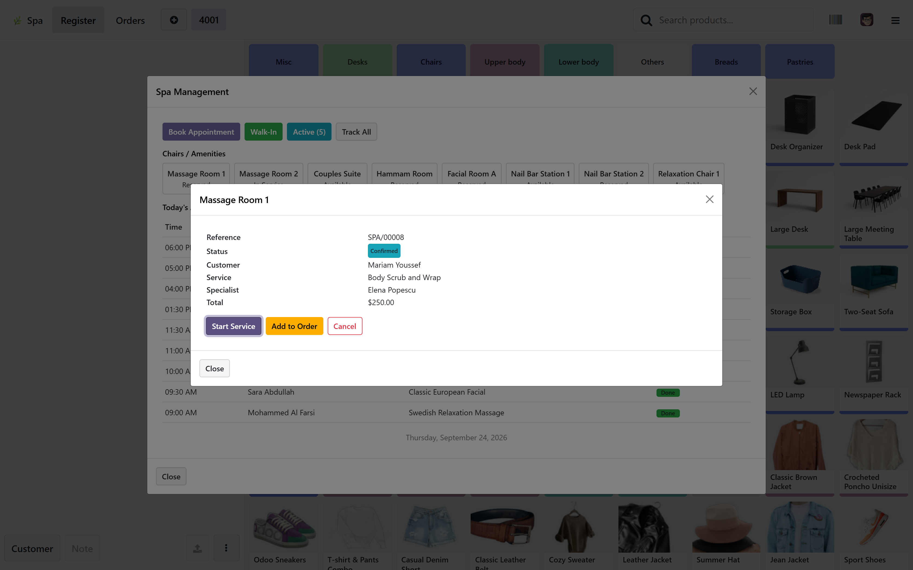
There is no separate no-show status: a booking nobody arrives for is cancelled the same way as any other cancellation.
Closing the till and reading the day's figures
Close the till the way you always have: Close Register from the till, or from the backend session list. Every order and payment taken through the Spa screen is a normal Point of Sale order underneath, so it appears in the session's totals like any other sale.

Revenue and commission by therapist
Open Spa > Appointments and switch to the pivot or graph view (icons at the top right of the list). This groups the total revenue and the commission earned by therapist and by treatment, using the figures every booking already carries.
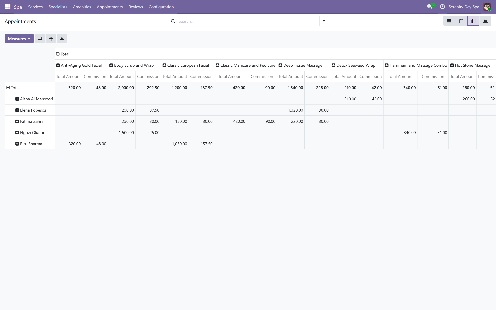
Ratings and commission plans
A review is left against a therapist, a customer and, when there is one, the booking itself, with a rating from one to five and a comment. Turn Reviews Mandatory on (step 5) to require one before a booking can be marked done.

Commission plans (Spa > Configuration > Commission Plans) are a flat amount or a percentage of the treatment price. Assign one to a therapist (step 3); the amount is calculated automatically the moment they are put on a booking. This module calculates the commission; paying it out is a step you still do yourself.
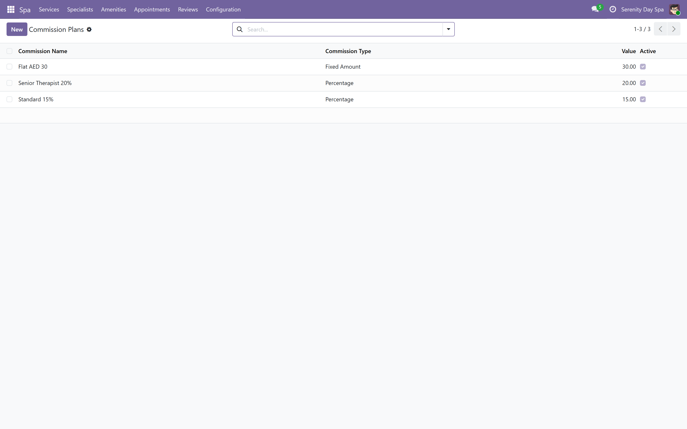
Settings that change how it behaves
Every setting that changes how the Spa screen behaves lives on the till's own form (step 5): Enable Spa Management, Appointments to Display, Default Spa Service Product, Show Specialists, Show Amenities and Reviews Mandatory. There is no separate global screen; every till can be set up differently.
What this module does not do
Said plainly, so nothing here is a surprise after you buy it.
- No customer facing booking website. Every booking is made by staff, from the till. Customers cannot book themselves online.
- No SMS or email reminders. Nothing sends a reminder to a customer before their appointment.
- No payroll. Commission is calculated and reported; it is not paid out by this module.
- No membership packages or pre-paid session bundles. Each booking is priced and paid on its own, with an optional single advance payment.
- No working hours calendar for therapists. The module will not refuse to book someone outside their normal hours.
- No separate per therapist day timeline. Day to day scheduling is read off the standard Odoo calendar and Track All, not a dedicated schedule per person.